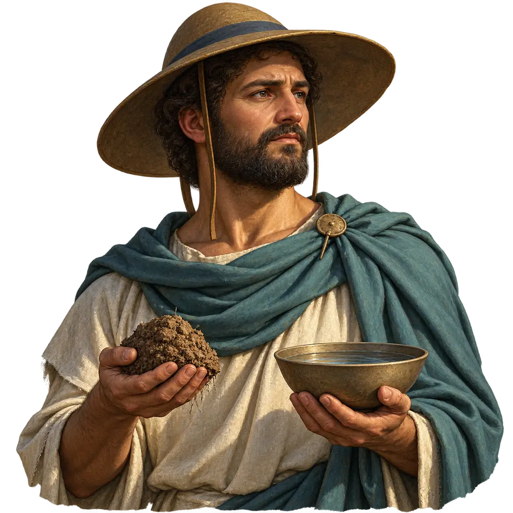
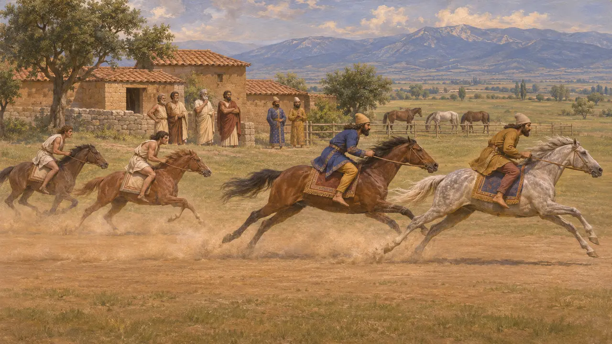
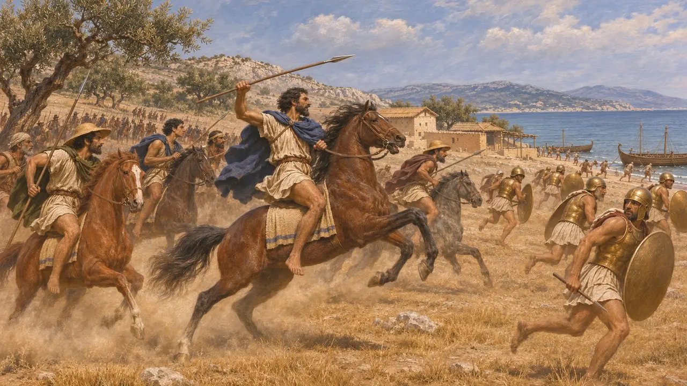
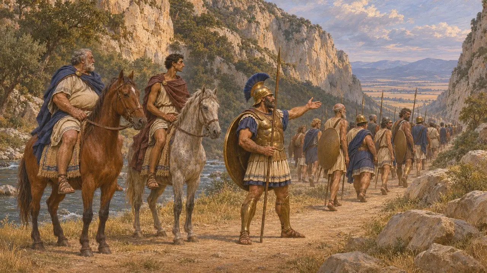
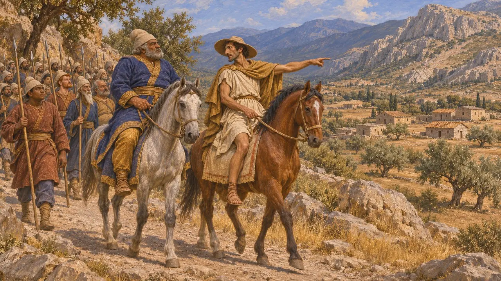
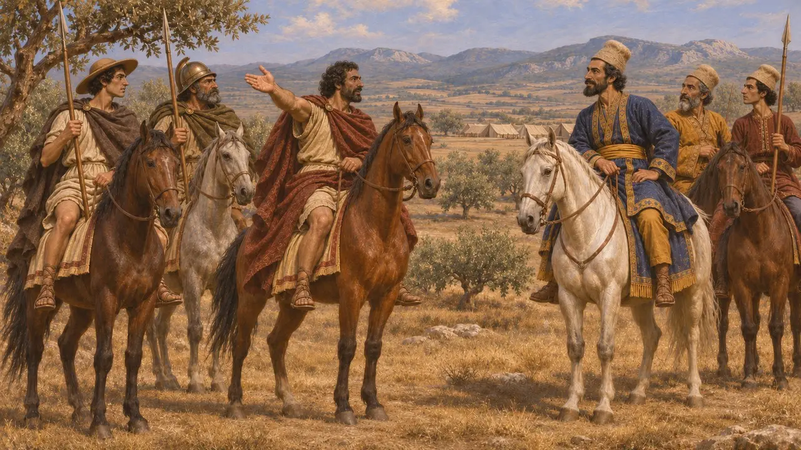
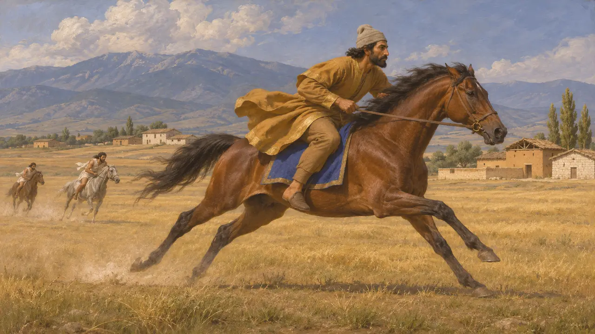

Los tesalios
Pueblo criador de caballos de la llanura del norte de Grecia que se puso del lado de Jerjes, 480-479 a. e. c.
En el juego: Nivel 10: Las Puertas Calientes, Nivel 11: El final
Los tesalios ocupaban la amplia llanura del norte de Grecia, tierra de grandes fincas y de los mejores caballos del mundo griego, dirigida por clanes nobles como los Alévadas de Larisa. En 480 a. e. c. Tesalia se pasó a Jerjes. Su sumisión abrió al ejército persa el camino hacia el sur, y más tarde los jinetes tesalios combatieron por Mardonio en Platea.
En el juego: El juego presenta a los tesalios como socio comercial, lo cual es un recurso del juego. Su nota de que se unieron al Rey en 480 a. e. c. es en líneas generales correcta, aunque los Alévadas habían invitado antes a Jerjes y la mayor parte de Tesalia solo cedió después de Tempe.

Tierra de caballos y sus grandes familias
Relato antiguoHeródoto llama a los Alévadas de Larisa reyes de Tesalia, y afirma que enviaron emisarios para instar a Jerjes a invadir Grecia. El poder en la llanura residía probablemente más en unos pocos clanes terratenientes que en una asamblea de ciudadanos. Heródoto cuenta también que Jerjes, acampado en Tesalia, hizo correr a sus propios caballos contra las yeguas tesalias, pues había oído que eran las mejores de Grecia, y los caballos griegos quedaron muy atrás.
Herodotus 7.6; Herodotus 7.196

Aliados de los tiranos de Atenas
Relato antiguoTesalia mantenía lazos con los tiranos pisistrátidas de Atenas. Heródoto cuenta que, cuando Esparta actuó por primera vez contra Hipias, hacia el 511 a. e. c., los tesalios enviaron mil jinetes al mando de Cineas, que derrotaron a la fuerza de desembarco espartana cerca de Falero. Un segundo ejército espartano al mando de Cleómenes expulsó después a los jinetes tesalios. Algunos años después de la expulsión de Hipias, los tesalios le ofrecieron Yolco como refugio, pero él lo rechazó.
Herodotus 5.63-64; Herodotus 5.94

El paso de Tempe y el cambio de bando
Relato antiguoEn el 480 a. e. c., los tesalios pidieron a los aliados griegos que defendieran el valle de Tempe, y unos diez mil hoplitas al mando del espartano Evéneto y del ateniense Temístocles marcharon al norte. Heródoto cuenta que pronto se retiraron, advertidos por Alejandro de Macedonia del tamaño de la hueste persa y al saber que existía otra ruta hacia Tesalia. Abandonados a su suerte, los tesalios se sometieron y sirvieron al Rey con empeño.
Herodotus 7.172-174

La elección de una facción o la de un pueblo
En disputaHeródoto afirma que los Alévadas actuaron por su cuenta y que la mayoría de los tesalios se unieron a Persia solo cuando los griegos los abandonaron. Los historiadores debaten si esto refleja divisiones reales o una excusa tesalia posterior. La larga enemistad de Tesalia con los focidios también influyó en los acontecimientos: Heródoto cuenta que los tesalios guiaron a los persas hasta la Fócide y que antes habían exigido cincuenta talentos para perdonarla.
Herodotus 7.172; Herodotus 8.27-31; J. F. Lazenby, The Defence of Greece 490-479 BC, 1993

Jinetes para Mardonio
Relato antiguoHeródoto afirma que los Alévadas siguieron instigando a Mardonio en el 479 a. e. c., y nombra a Tórax de Larisa y a sus hermanos entre los acompañantes de Mardonio en Platea. Los tesalios figuran en su lista de griegos formados en el bando persa. Después, el rey espartano Leotíquidas dirigió una expedición a Tesalia que, según Heródoto, fracasó cuando lo sorprendieron aceptando un soborno.
Herodotus 9.1; Herodotus 9.31; Herodotus 9.58; Herodotus 6.72

El emblema junto a su nombre
En los documentosEl emblema de Tesalia en el juego es un caballo, de las monedas tesalias de hacia 480-460 a. e. c. La llanura era famosa por sus caballos: Heródoto dice que Jerjes, habiendo oído que los caballos tesalios eran los mejores de Grecia, hizo correr allí a los suyos contra ellos, y los caballos tesalios quedaron muy atrás.
Head, Historia Numorum, Thessaly; Herodotus 7.196
Fuentes
- Herodotus, Histories, books 5, 7, 8 and 9
- J. F. Lazenby, The Defence of Greece 490-479 BC, 1993
- P. Briant, From Cyrus to Alexander, 2002
- M. Sordi, La lega tessala fino ad Alessandro Magno, 1958